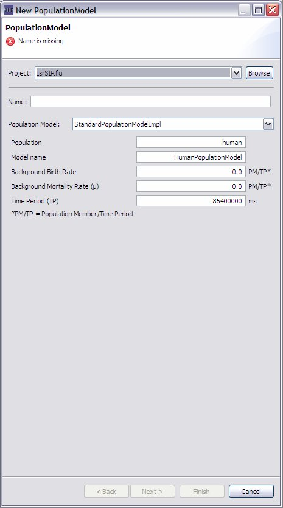

1) On the menu bar click ->new->Population Model or alternatively select the New Population Icon from the toolbar
2) This will launch the Dialog shown in Figure 1. Fill in the Name: (e.g. ExperimentalPopulationModel)
3) Select the Population Model in the ComboBox: e.g., select "StandardPopulationModelImpl"
Set the parameters of the population model, such as background birth rate, background mortality rate and time period
|
 |
|
Figure 1: The new Population Model. |
5) Fill in any Dublin core data you want to add
6) Click finish
7) Under decorators you should see ExperimentalPopulationModel.standard
8) Double click on MODELS in the project explorer. You should see "CubaExperimentalDisease" in the Resource Set.
9) DRAG your new population model (e.g., ExperimentalPopulationModel.standard) from decorators (in the project explorer window) into the model "CubaExperimentalDisease" in the Resource Set window. Expand the "CubaExperimentalDisease" in the Resource Set window to see that it worked.